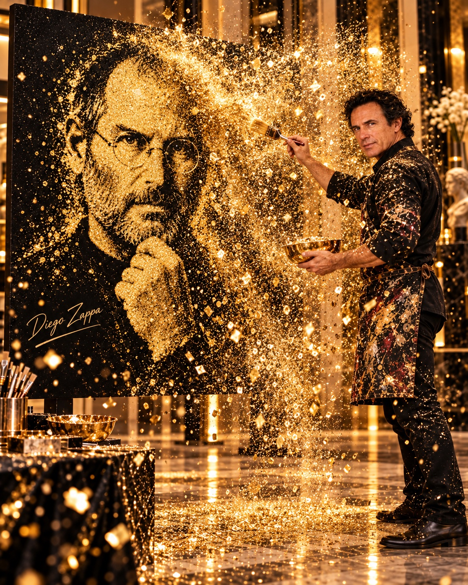
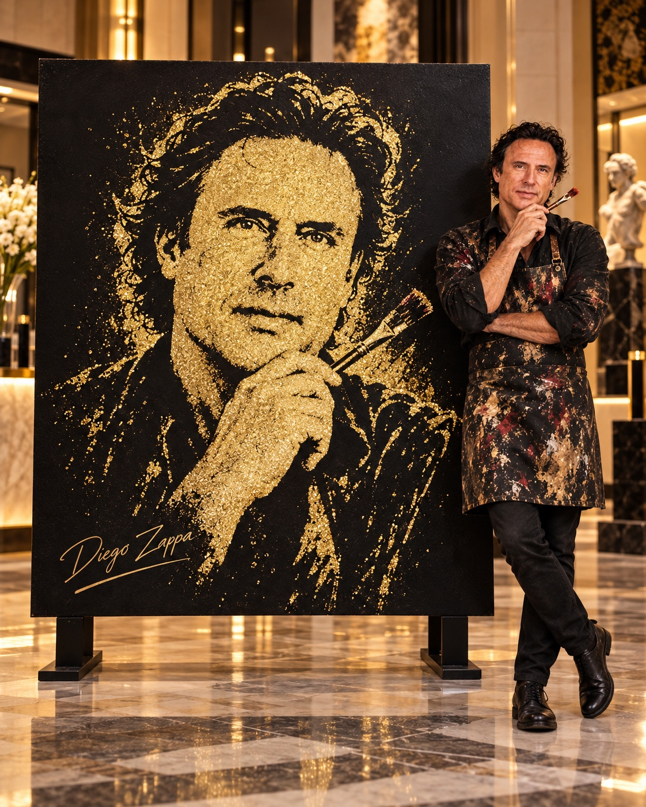

Purpurina
en movimiento.
Un gran retrato aparece sobre negro mate mientras miles de destellos dorados cruzan el aire. Una experiencia artística concebida para sorprender en eventos, galas y espacios culturales.

Arte, precisión y espectáculo: la purpurina transforma un lienzo de gran formato en un retrato brillante que se revela ante el público.
Preparación
Selección del personaje, diseño del retrato y preparación previa del soporte y del sistema de adhesión.
El momento
Diego Zappa realiza lanzamientos controlados de glitter; la iluminación resalta cada destello en el aire.
Revelación
La obra cobra forma en el escenario y se convierte en el cierre visual de una experiencia memorable.
Instantes de oro.
Imágenes conceptuales para presentar el formato escénico. Cada trabajo se adapta al retrato elegido, a las condiciones del espacio y al evento.

Gran formato.
Gran impacto.
Soporte artístico
Bastidor de pino reforzado, lienzo de algodón tensado, imprimación adecuada y acabado negro mate.
Materiales
Purpurina y glitter dorado y champán, con reflejos plata, junto a un adhesivo compatible con el soporte.
Montaje
Soporte autoportante y estabilizado, área de trabajo delimitada e iluminación que realza los reflejos.
Seguridad
Lanzamientos controlados hacia el lienzo; protección y recogida de partículas. Los requisitos se verifican según el recinto y los materiales.
SPEED
GLITTER
ART.
BASTIDOR DE PINO + LIENZO
200 × 200 CM
Dossier técnico.
Consulta aquí el contenido técnico del proyecto: bastidor, lienzo, materiales, preparación, montaje y necesidades de producción.
Una base de trabajo para equipos de eventos, producción, cultura y espacios expositivos.
Ficha de realización.
01 · Bastidor y lienzo
Bastidor cuadrado de 200 × 200 cm realizado en madera de pino seca y recta, con uniones firmes, travesaños de refuerzo y escuadras según cálculo del montaje. Tela de lienzo de algodón tensada y grapada por la parte posterior. Preparación e imprimación compatible y acabado negro mate.
02 · Técnica y materiales
Diseño previo del retrato, máscara o patrón de adhesión por zonas y adhesivo artístico compatible con la imprimación. Aplicación de purpurina dorada, tonos champán y detalles plata, seleccionada para uso escénico. Pruebas previas de adherencia, contraste y comportamiento del material.
03 · Actuación
El artista ejecuta una intervención de aproximadamente 8 a 12 minutos, sujeta al formato elegido, combinando gestos de lanzamiento controlado de partículas hacia la obra y una revelación final con iluminación teatral. La preparación del dibujo y los tiempos de secado se realizan previamente.
04 · Instalación y seguridad
Soporte autoportante contrapesado o fijado de forma segura; iluminación sin llama ni chispas; protecciones de suelo y un área delimitada para evitar el acceso del público. Utilizar partículas aptas para el recinto, evitar su inhalación y dispersión descontrolada, prever protección respiratoria y ocular adecuada, y recoger los residuos al finalizar. Toda puesta en escena debe ensayarse y validarse con el organizador.
Las dimensiones del área de trabajo, necesidades eléctricas, medidas de prevención y tiempos de montaje se definirán de acuerdo con el recinto y la evaluación técnica del evento.
Una imagen
que permanece.
Una experiencia visual para convenciones, galas, presentaciones, eventos institucionales y celebraciones. Solicita una propuesta adaptada a tu espacio.
Solicitar propuesta personalizada